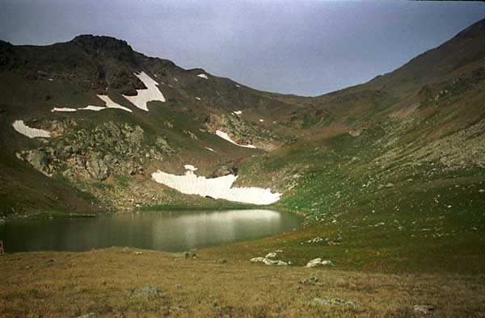

Хребет Мысты-Баши и массив Кара-кая, высота 3027 м., н/к.
Расположен в хребте Мысты-Баши к северу от вершины Красная горка, соединяет долины рек Халега (левый приток Аксаута) и Чегетчат (правый приток Марухи).
В 12 км от поселка Красный Карачай, у моста через Аксаут, от дороги ответвляется тропа и уходит по левому берегу. У речки Халеги нужно выйти на хорошо выраженную тропу, которая поворачивает вправо к перевалу. Выше она отклоняется к небольшой осыпи и вскоре выводит к седловинке. За ручьем короткий подъем завершается широкой альпийской долиной. У кошары тропа пересекает осыпь и выводит на первую террасу. Отсюда открывается вид на скалистую пирамиду Кара-Каи. За первой террасой — вторая. За ручьем вскоре открывается холодное мрачноватое озеро Халега, у которого на небольшой высоте стоит памятник. У озера разрушенные блиндажи, железо. От озера до перевала 30–40 минут ходьбы. С перевала Халега тропа ведет в долину Марухи.
Текст и фотография — Западный Кавказ.